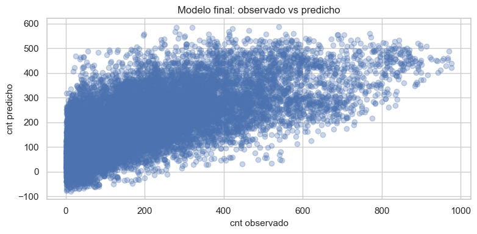
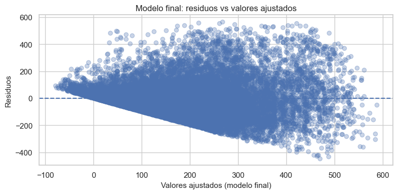

Capítulo 6 – Modelo Final y Evaluación con Validación Cruzada#
Sistema de Bicicletas Compartidas – Dataset hour_prepared.csv#
En este capítulo construiremos un modelo final de regresión lineal múltiple para la demanda horaria de bicicletas (cnt).
Usaremos el dataset preparado en el Capítulo 2 (hour_prepared.csv), y:
Seleccionaremos un subconjunto de variables mediante selección forward basada en AIC.
Ajustaremos el modelo final con todas las observaciones.
Evaluaremos su desempeño usando validación cruzada K-fold (K = 5).
Analizaremos gráficos básicos de ajuste del modelo final.
1. Carga de librerías y datos#
Cargamos el dataset ya preparado que contiene las variables numéricas y dummies listas para modelar.
import pandas as pd
import numpy as np
import matplotlib.pyplot as plt
import seaborn as sns
import statsmodels.api as sm
from sklearn.model_selection import KFold
from sklearn.metrics import mean_squared_error, r2_score
sns.set(style="whitegrid")
plt.rcParams["figure.figsize"] = (8, 4)
plt.rcParams["axes.titlesize"] = 12
plt.rcParams["axes.labelsize"] = 11
# Ruta relativa al dataset preparado
data_path = "../data/hour_prepared.csv"
df_model = pd.read_csv(data_path)
df_model.head()
| temp | atemp | hum | windspeed | peak_hour | hr_1 | hr_2 | hr_3 | hr_4 | hr_5 | ... | weekday_6 | workingday_1 | season_2 | season_3 | season_4 | yr_1 | weathersit_2 | weathersit_3 | weathersit_4 | cnt | |
|---|---|---|---|---|---|---|---|---|---|---|---|---|---|---|---|---|---|---|---|---|---|
| 0 | 0.24 | 0.2879 | 0.81 | 0.0 | 0 | False | False | False | False | False | ... | True | False | False | False | False | False | False | False | False | 16 |
| 1 | 0.22 | 0.2727 | 0.80 | 0.0 | 0 | True | False | False | False | False | ... | True | False | False | False | False | False | False | False | False | 40 |
| 2 | 0.22 | 0.2727 | 0.80 | 0.0 | 0 | False | True | False | False | False | ... | True | False | False | False | False | False | False | False | False | 32 |
| 3 | 0.24 | 0.2879 | 0.75 | 0.0 | 0 | False | False | True | False | False | ... | True | False | False | False | False | False | False | False | False | 13 |
| 4 | 0.24 | 0.2879 | 0.75 | 0.0 | 0 | False | False | False | True | False | ... | True | False | False | False | False | False | False | False | False | 1 |
5 rows × 43 columns
Verificamos dimensiones y ausencia de valores faltantes.
df_model.shape
(17379, 43)
df_model.isna().sum().sum()
np.int64(0)
2. Definición de la variable objetivo y predictores#
La variable objetivo es cnt y los predictores son todas las demás columnas del dataset.
target_col = "cnt"
if target_col not in df_model.columns:
raise ValueError("La columna 'cnt' no se encuentra en 'hour_prepared.csv'.")
y = df_model["cnt"].astype(float)
X_full = df_model.drop(columns=["cnt"])
X_full = X_full.select_dtypes(include=["number"]).astype(float)
X_full.shape, X_full.dtypes.head()
((17379, 5),
temp float64
atemp float64
hum float64
windspeed float64
peak_hour float64
dtype: object)
3. Selección de variables mediante Forward Selection (AIC)#
Implementamos un procedimiento de selección forward usando el criterio AIC:
Comenzamos sin predictores.
En cada paso, probamos agregar cada variable candidata restante.
Elegimos la que produce el menor AIC.
Si el AIC mejora respecto al modelo anterior, la añadimos al conjunto.
Repetimos hasta que añadir nuevas variables ya no mejore el AIC.
def fit_ols_add_const(X, y):
X_const = sm.add_constant(X, has_constant='add')
model = sm.OLS(y, X_const).fit()
return model
all_predictors = list(X_full.columns)
selected_vars = []
current_aic = None
history = []
while True:
remaining = [v for v in all_predictors if v not in selected_vars]
if not remaining:
break
trial_results = []
for var in remaining:
vars_trial = selected_vars + [var]
model_trial = fit_ols_add_const(X_full[vars_trial], y)
trial_results.append((model_trial.aic, var, model_trial))
trial_results.sort(key=lambda x: x[0])
best_aic, best_var, best_model = trial_results[0]
if current_aic is None or best_aic < current_aic - 1e-6:
selected_vars.append(best_var)
current_aic = best_aic
history.append((len(selected_vars), best_var, best_aic))
else:
break
selected_vars, current_aic
(['peak_hour', 'temp', 'hum', 'atemp', 'windspeed'],
np.float64(219663.1225741774))
history_df = pd.DataFrame(history, columns=["k", "variable_agregada", "AIC"])
history_df
| k | variable_agregada | AIC | |
|---|---|---|---|
| 0 | 1 | peak_hour | 226076.264284 |
| 1 | 2 | temp | 222107.723827 |
| 2 | 3 | hum | 219719.131106 |
| 3 | 4 | atemp | 219663.313445 |
| 4 | 5 | windspeed | 219663.122574 |
El conjunto de variables seleccionadas por AIC será la base de nuestro modelo final.
X_sel = X_full[selected_vars].copy()
X_sel.shape
(17379, 5)
4. Ajuste del modelo final con todas las observaciones#
Ajustamos el modelo OLS usando todas las observaciones y solo las variables seleccionadas.
X_sel_const = sm.add_constant(X_sel, has_constant='add')
model_final = sm.OLS(y, X_sel_const).fit()
model_final
<statsmodels.regression.linear_model.RegressionResultsWrapper at 0x232d68c2590>
Mostramos el resumen del modelo final:
model_final.summary()
| Dep. Variable: | cnt | R-squared: | 0.451 |
|---|---|---|---|
| Model: | OLS | Adj. R-squared: | 0.451 |
| Method: | Least Squares | F-statistic: | 2858. |
| Date: | Sat, 29 Nov 2025 | Prob (F-statistic): | 0.00 |
| Time: | 02:51:34 | Log-Likelihood: | -1.0983e+05 |
| No. Observations: | 17379 | AIC: | 2.197e+05 |
| Df Residuals: | 17373 | BIC: | 2.197e+05 |
| Df Model: | 5 | ||
| Covariance Type: | nonrobust |
| coef | std err | t | P>|t| | [0.025 | 0.975] | |
|---|---|---|---|---|---|---|
| const | 119.3387 | 5.603 | 21.299 | 0.000 | 108.356 | 130.321 |
| peak_hour | 186.2537 | 2.353 | 79.161 | 0.000 | 181.642 | 190.866 |
| temp | 93.0452 | 34.936 | 2.663 | 0.008 | 24.567 | 161.524 |
| hum | -270.8086 | 5.543 | -48.853 | 0.000 | -281.674 | -259.943 |
| atemp | 303.5389 | 39.191 | 7.745 | 0.000 | 226.720 | 380.357 |
| windspeed | 13.2718 | 8.968 | 1.480 | 0.139 | -4.306 | 30.849 |
| Omnibus: | 2110.731 | Durbin-Watson: | 0.523 |
|---|---|---|---|
| Prob(Omnibus): | 0.000 | Jarque-Bera (JB): | 3527.659 |
| Skew: | 0.839 | Prob(JB): | 0.00 |
| Kurtosis: | 4.435 | Cond. No. | 72.6 |
Notes:
[1] Standard Errors assume that the covariance matrix of the errors is correctly specified.
4.1. Tabla de coeficientes del modelo final#
Construimos una tabla con coeficientes, errores estándar, estadísticos t, valores-p e intervalos de confianza al 95%.
conf_int = model_final.conf_int(alpha=0.05)
conf_int.columns = ["IC 2.5%", "IC 97.5%"]
coef_table = pd.DataFrame({
"coef": model_final.params,
"std err": model_final.bse,
"t": model_final.tvalues,
"P>|t|": model_final.pvalues,
})
coef_table = pd.concat([coef_table, conf_int], axis=1)
coef_table.index.name = "Parámetro"
coef_table.round(4)
| coef | std err | t | P>|t| | IC 2.5% | IC 97.5% | |
|---|---|---|---|---|---|---|
| Parámetro | ||||||
| const | 119.3387 | 5.6031 | 21.2989 | 0.0000 | 108.3561 | 130.3212 |
| peak_hour | 186.2537 | 2.3529 | 79.1606 | 0.0000 | 181.6418 | 190.8655 |
| temp | 93.0452 | 34.9362 | 2.6633 | 0.0077 | 24.5666 | 161.5237 |
| hum | -270.8086 | 5.5433 | -48.8533 | 0.0000 | -281.6740 | -259.9431 |
| atemp | 303.5389 | 39.1911 | 7.7451 | 0.0000 | 226.7205 | 380.3574 |
| windspeed | 13.2718 | 8.9677 | 1.4800 | 0.1389 | -4.3058 | 30.8494 |
5. Validación cruzada K-fold (K = 5)#
Para evaluar la capacidad de generalización del modelo final realizamos una validación cruzada K-fold con K = 5. En cada partición:
Ajustamos el modelo en el conjunto de entrenamiento.
Calculamos el RMSE en el conjunto de validación.
Promediamos los RMSE de las 5 particiones.
def cv_rmse_ols(X, y, k=5, random_state=123):
kf = KFold(n_splits=k, shuffle=True, random_state=random_state)
rmses = []
for train_idx, test_idx in kf.split(X):
X_train_cv = X.iloc[train_idx]
y_train_cv = y.iloc[train_idx]
X_test_cv = X.iloc[test_idx]
y_test_cv = y.iloc[test_idx]
X_train_cv_const = sm.add_constant(X_train_cv, has_constant='add')
X_test_cv_const = sm.add_constant(X_test_cv, has_constant='add')
model_cv = sm.OLS(y_train_cv, X_train_cv_const).fit()
y_pred_cv = model_cv.predict(X_test_cv_const)
rmse_cv = np.sqrt(mean_squared_error(y_test_cv, y_pred_cv))
rmses.append(rmse_cv)
return np.mean(rmses), np.std(rmses)
mean_rmse_cv, std_rmse_cv = cv_rmse_ols(X_sel, y, k=5)
mean_rmse_cv, std_rmse_cv
(np.float64(134.39140769306715), np.float64(1.2495493592320743))
También calculamos las métricas in-sample (usando todas las observaciones):
y_pred_full = model_final.predict(X_sel_const)
rmse_full = np.sqrt(mean_squared_error(y, y_pred_full))
r2_full = r2_score(y, y_pred_full)
metrics_final = pd.DataFrame({
"RMSE": [rmse_full, mean_rmse_cv],
"R2": [r2_full, np.nan],
}, index=["Full sample", "CV (mean)"])
metrics_final.round(4)
| RMSE | R2 | |
|---|---|---|
| Full sample | 134.3572 | 0.4513 |
| CV (mean) | 134.3914 | NaN |
6. Gráficos de ajuste del modelo final#
Para complementar el análisis numérico, mostramos:
Diagrama de dispersión
cnt observadovscnt predicho.Gráfico de residuales vs valores ajustados.
# Observado vs predicho
fig, ax = plt.subplots()
ax.scatter(y, y_pred_full, alpha=0.3)
ax.set_xlabel("cnt observado")
ax.set_ylabel("cnt predicho")
ax.set_title("Modelo final: observado vs predicho")
plt.tight_layout()
plt.show()

# Residuos vs valores ajustados
residuals_full = y - y_pred_full
fig, ax = plt.subplots()
ax.scatter(y_pred_full, residuals_full, alpha=0.3)
ax.axhline(0, linestyle='--')
ax.set_xlabel("Valores ajustados (modelo final)")
ax.set_ylabel("Residuos")
ax.set_title("Modelo final: residuos vs valores ajustados")
plt.tight_layout()
plt.show()

7. Conclusiones del modelo final#
En este capítulo:
Aplicamos selección forward basada en AIC para escoger un subconjunto de variables explicativas a partir de
hour_prepared.csv.Ajustamos un modelo final de regresión lineal múltiple con todas las observaciones.
Calculamos métricas de ajuste global (RMSE y R² en la muestra completa).
Evaluamos la capacidad de generalización mediante validación cruzada K-fold.
Visualizamos el desempeño del modelo final mediante gráficos de observado vs predicho y residuales vs ajustados.
En capítulos posteriores se podrían explorar extensiones como:
Inclusión de términos polinómicos o interacciones.
Modelos regularizados (Ridge, Lasso, ElasticNet).
Modelos no lineales o basados en árboles de decisión.